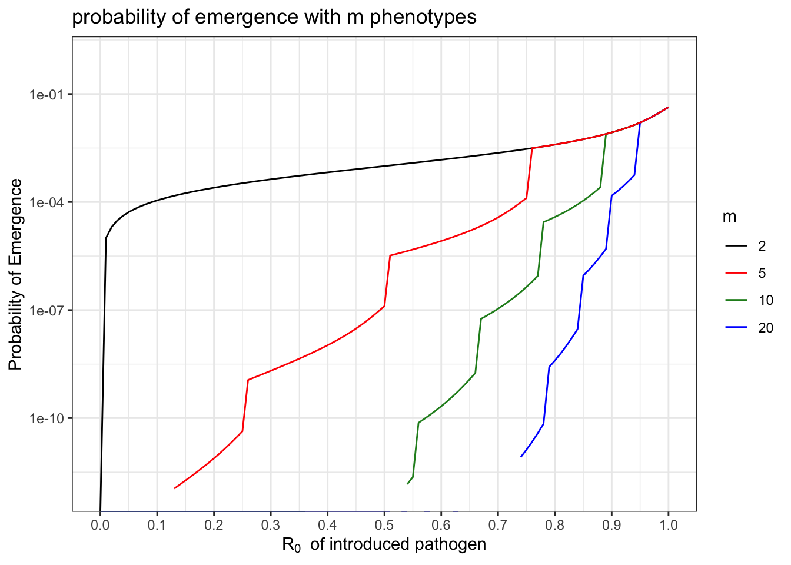
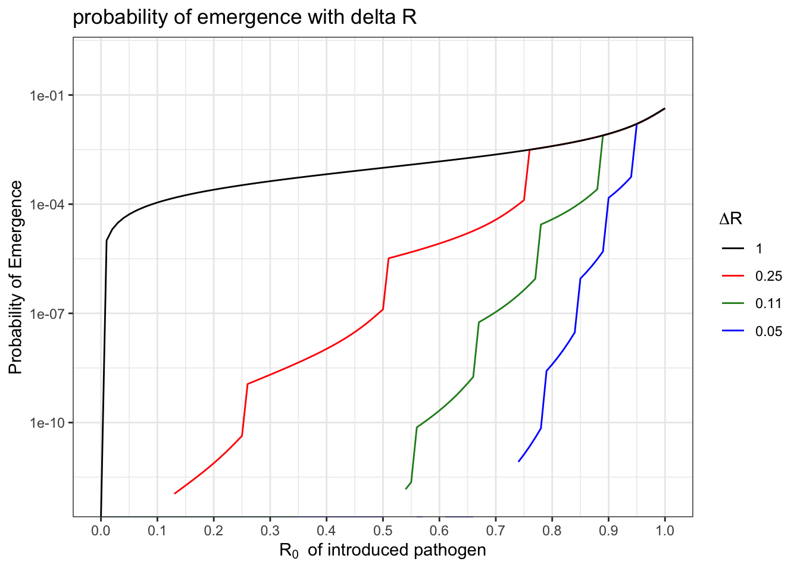
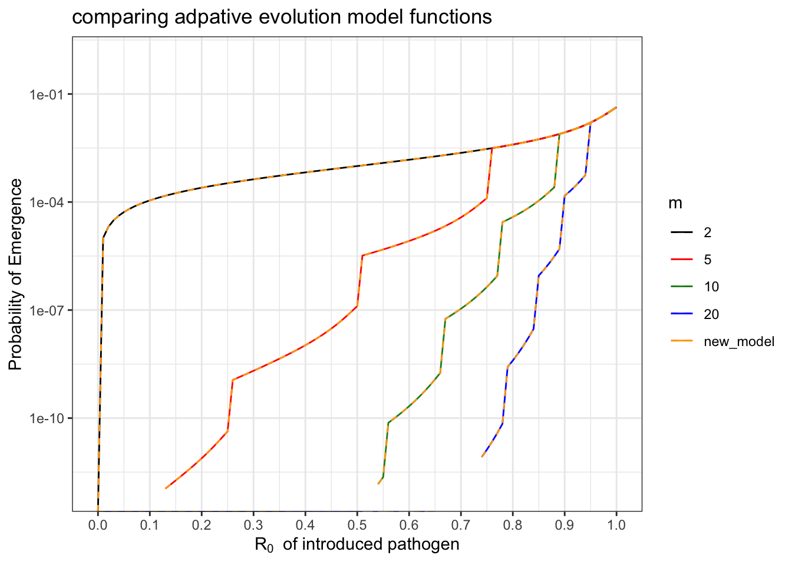

── Conflicts ────────────────────────────────────────── tidyverse_conflicts() ──
✖ dplyr::filter() masks stats::filter()
✖ dplyr::lag() masks stats::lag()
ℹ Use the conflicted package (<http://conflicted.r-lib.org/>) to force all conflicts to become errors
library(nleqslv) #for solving nonlinear systems of equationslibrary(gridExtra) #for arrangeing plots
Attaching package: 'gridExtra'
The following object is masked from 'package:dplyr':
combine
source(here("code", "functions", "functions.R"))
We set out to develop a model of adaptive evolution wherein a pathogen’s basic reproductive number increases by a fixed step, \(\Delta R\), with each mutation. As a result, we wanted pathogens that started with higher \(R_0\) to require fewer mutations to emerge.
Previously (see “Archive” files), we formatted our adaptive evolution model to match the structure presented in @AntiaNature2003. In this model, \(R_0\) between 0 and 1 was divided into \(m\) intervals; the intial \(R_0\) of the spillover pathogen determined how many mutations (intervals) away the pathogen was to adapatation to human-human transmission (\(R_0 > 1\).) We wanted to explicitly define the number of “types” in our branching process model, which is the biological equivalent to saying there are \(m\) possible phenotypes, where the \(R_0\) of the \(ith\) phenotype lies in the \(ith\) interval.
The function itself would define the \(\Delta R\) gained with each mutation as the size of each interval, and the branching process would start with 1 infection of the type into which the initial \(R_0\) fell. If this is confusing, yes, it is. That is why we changed it :)
Below is a plot of the old model, where we varied parameter \(m\) to indicate the number of possible phenotypes with \(R_0\) between 0 and above 1. The original code for this model can be found in \code\functions\archive\functions.R\. I have rewritten it here in terms of \(R_wt\) and \(R_adapted\) in place of \(R0_1\) and \(Rfinal\), respectively, but it is the same model.
## parametersR_wts =seq(0, 1, by =0.01) #wt R0s to testR_adapted =1000#R0 of final phenotypems =c(2,5, 10,20) #how many types? m-1 mutations required, meaning m-2 intermediate typesmu =10^-3#mutation rate## matrix to store emergence probabilities probs.emergence =matrix(nrow =length(R_wts), ncol =length(ms)) # vector to store probabilities of emergence## simulatefor(j in1:length(ms)){for(i in1:length(R_wts)){ probs.emergence[i,j] =pEmergence_fixed(m = ms[j], mu = mu, R_wt = R_wts[i], R_adapted = R_adapted) #run simulation for each m,R_wt combination }}## format matrix for plottingprobs.emergence =cbind(R_wts, probs.emergence) %>%as.data.frame() #format as dataframe with column denoting the R_wt used to generate the probabilities row-wise and column for each m used to generate the probabilities column-wisecolnames(probs.emergence) =c("R0", ms) #name the columns for easy referencingprobs.emergence = probs.emergence %>%#pivot to long-formpivot_longer(cols =!R0, #keep R_wt columnnames_to ="m", #add feature denoting "m" used row-wisevalues_to ="P.Emergence") #add feature denoting the pemergence calculated from m in m column and R_wt in R_wt column## plot# colors for plottingmy.colors =c("black", "red", "forestgreen", "blue", "orange", "purple") #because pretty# plotggplot() +geom_line(data = probs.emergence, aes(x = R0, y = P.Emergence, group = m, col = m)) +#plot p emergence as function of R_wt for each mtheme_bw() +#white background with grey gridlineslabs(x =expression("R"[0] ~" of introduced pathogen"), y ="Probability of Emergence", title ="probability of emergence with m phenotypes") +#axis and title labelsscale_x_continuous(breaks =seq(0, 1, by =0.1)) +scale_y_continuous(trans ="log10", limits =c(10^-12,1)) +#log10 y scalescale_color_manual(values = my.colors, breaks =c("2", "5", "10", "20")) #because pretty
Warning in self$trans$transform(x): NaNs produced
Warning: Transformation introduced infinite values in continuous y-axis

Here, we plot the same model, but now written in terms of the step increase in \(R_0\), \(\Delta R\), with each mutation.
## parametersR_wts =seq(0, 1, by =0.01) #wt R0s to testR_adapted =1000#R0 of final phenotypedelta_Rs =1/(c(2,5, 10,20) -1)#how many types? m-1 mutations required, meaning m-2 intermediate typesmu =10^-3#mutation rate## matrix to store emergence probabilities probs.emergence.deltaR =matrix(nrow =length(R_wts), ncol =length(delta_Rs)) # vector to store probabilities of emergence## simulatefor(j in1:length(delta_Rs)){for(i in1:length(R_wts)){ probs.emergence.deltaR[i,j] =pEmergence_Rstep(delta_R = delta_Rs[j], mu = mu, R_wt = R_wts[i], R_adapted = R_adapted) #run simulation for each delta_R,R_wt combination }}## format matrix for plottingprobs.emergence.deltaR =cbind(R_wts, probs.emergence.deltaR) %>%as.data.frame() #format as dataframe with column denoting the R_wt used to generate the probabilities row-wise and column for each m used to generate the probabilities column-wisecolnames(probs.emergence.deltaR) =c("R0", as.character(round(delta_Rs, digits =2))) #name the columns for easy referencingprobs.emergence.deltaR = probs.emergence.deltaR %>%#pivot to long-formpivot_longer(cols =!R0, #keep R_wt columnnames_to ="delta_R", #add feature denoting "m" used row-wisevalues_to ="P.Emergence") #add feature denoting the pemergence calculated from m in m column and R_wt in R_wt column## plot# colors for plottingmy.colors =c("black", "red", "forestgreen", "blue", "orange", "purple") #because pretty# plotggplot() +geom_line(data = probs.emergence.deltaR, aes(x = R0, y = P.Emergence, group = delta_R, col = delta_R)) +#plot p emergence as function of R_wt for each mtheme_bw() +#white background with grey gridlineslabs(x =expression("R"[0] ~" of introduced pathogen"), y ="Probability of Emergence", title ="probability of emergence with delta R", col =expression(Delta*R)) +#axis and title labelsscale_x_continuous(breaks =seq(0, 1, by =0.1)) +scale_y_continuous(trans ="log10", limits =c(10^-12,1)) +#log10 y scalescale_color_manual(values = my.colors, breaks =as.character(round(delta_Rs, digits =2))) #because pretty
Warning in self$trans$transform(x): NaNs produced
Warning: Transformation introduced infinite values in continuous y-axis

Below, I plot the results of the model in terms of \(\Delta R\) with orange dashed lines, and the corresponding curves from the old model in terms of “m” in solid colors:
# colors for plottingmy.colors =c("black", "red", "forestgreen", "blue", "orange", "purple") #because pretty# plotggplot() +geom_line(data = probs.emergence, aes(x = R0, y = P.Emergence, group = m, col = m)) +geom_line(data = probs.emergence.deltaR, aes(x = R0, y = P.Emergence, group = delta_R, col ="new_model"), linetype ="dashed") +#plot p emergence as function of R_wt for each mtheme_bw() +#white background with grey gridlineslabs(x =expression("R"[0] ~" of introduced pathogen"), y ="Probability of Emergence", title ="comparing adpative evolution model functions") +#axis and title labelsscale_x_continuous(breaks =seq(0, 1, by =0.1)) +scale_y_continuous(trans ="log10", limits =c(10^-12,1)) +#log10 y scalescale_color_manual(values = my.colors, breaks =c("2", "5", "10", "20", "new_model")) #because pretty
Warning in self$trans$transform(x): NaNs produced
Warning: Transformation introduced infinite values in continuous y-axis
Warning in self$trans$transform(x): NaNs produced
Warning: Transformation introduced infinite values in continuous y-axis

Comparing the plots, we see that they are the same function, just written in terms of different parameters! Cheers!